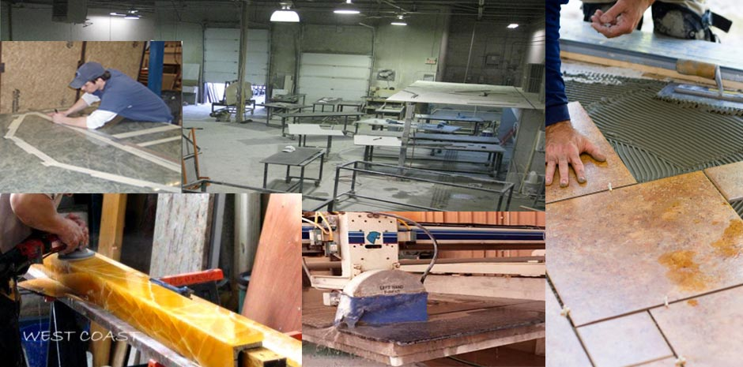

We are located in Great Los Angeles area and we have grown in the past years to become a highly experienced and reliable installer of stone products.
We offer a complete range of services, from measuring to delivery and installation. At West Coast, we accommodate projects of all shapes and sizes from a whole building to a simple vanity, we are able to meet your needs.

Our main products are kitchen and vanity countertops, but we also manufacture and install shop fronts, staircases, fireplaces, wall cladding, coffee tables and tile installation.
The combination of our wide range of quality products, professional service and competitive prices have made West Coast a much sought after supplier of quality stone products.
Our Services
- Kitchen Countertops
- Bathroom Vanities
- Fireplace and JacuzziSurrounds
- Marble and Granite Tile Flooring
- Bartops,Conference Tables,Barbeques
 Granite – This hard and dense natural stone is ideal for ...
Granite – This hard and dense natural stone is ideal for ... One of the many reasons that natural stone is so popular today in both residential and commercial installations...
One of the many reasons that natural stone is so popular today in both residential and commercial installations... We are located in Great Los Angeles area and we have grown in the past years to become a highly experienced and reliable granite fabricator and installer...
We are located in Great Los Angeles area and we have grown in the past years to become a highly experienced and reliable granite fabricator and installer... What’s the difference between marble and granite?
Although both are stones and both are quarried from the earth, granite and marble (and marble’s relatives – limestone, onyx and travertine)...
What’s the difference between marble and granite?
Although both are stones and both are quarried from the earth, granite and marble (and marble’s relatives – limestone, onyx and travertine)...